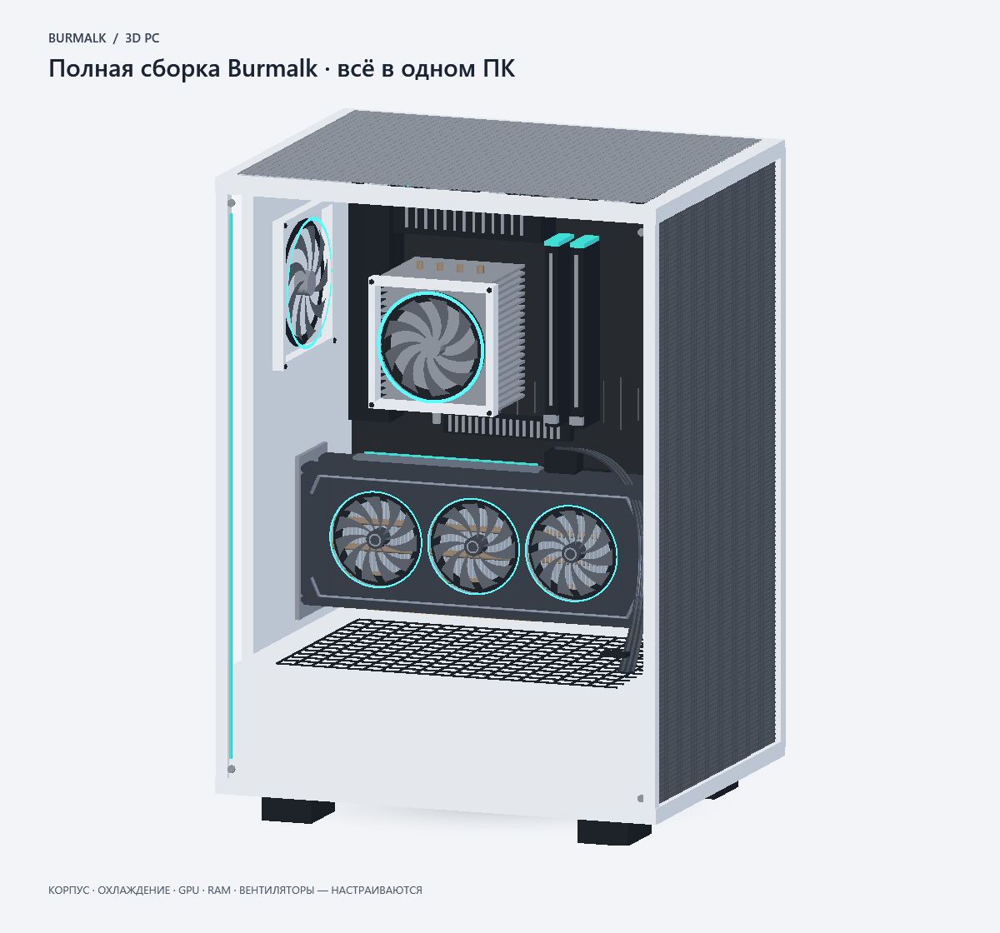

Мониторинг без догадок
Загрузка и частоты CPU/GPU, доступные температуры, RAM и видеопамять, активность дисков и трафик сети. История на графиках и процессы, которые расходуют ресурсы.
Основная версия 1.1.11
Узнай, на что способен твой компьютер. Следи за его состоянием, оцени производительность и собери рабочий экран под себя.

Перетащи, чтобы повернутьТа же модель, что в приложении. Нажми на деталь, чтобы рассмотреть её.
ПУЛЬС ТВОЕГО ПК
Показатели, графики, музыка и 3D-сборка — на твоём главном экране. Оставь нужное, скрой остальное и расположи виджеты как удобно.
Свободное расположение виджетов, живые показатели и интерактивный 3D-ПК.
Реальные скриншоты 1.1.11ЗНАЙ СВОЙ КОМПЬЮТЕР
Burmalk объединяет оценку производительности и наблюдение за состоянием всего ПК. Данные помогают понять, что происходит сейчас и как меняется нагрузка.
Загрузка и частоты CPU/GPU, доступные температуры, RAM и видеопамять, активность дисков и трафик сети. История на графиках и процессы, которые расходуют ресурсы.
От «Отлично» до «Плохо»: цветная оценка с причинами по доступным датчикам. Температура, заполнение памяти и дисков — с пояснениями, на что обратить внимание.
Перемещай и скрывай виджеты, выбирай цветовую тему или фото с ПК. Смотри текущий трек и обложку из Spotify или SoundCloud, когда источник передаёт их через Windows.
Подробная видеокарта, плата, память, накопители и охлаждение. Настрой корпус, число вентиляторов GPU, RAM, воздушный кулер или СЖО. В приложении доступны также модель ноутбука и 3D-виджет на главной с подсветкой деталей.
БОЛЬШЕ, ЧЕМ СПИСОК КОМПЛЕКТУЮЩИХ
PC RANK оценивает CPU, GPU и память по измеренным результатам. Полный проход занимает около трёх минут и показывает вклад каждого компонента.
Сохрани результат, следи за прогрессом до следующего ранга и поставь его виджет на главную. Оценка основана на собственной открытой методике Burmalk.
Как считается рейтинг ↗ИНФОРМАЦИЯ ОСТАЁТСЯ В ИГРЕ
Прозрачный FPS-оверлей через RTSS: частота кадров, средний FPS, время кадра и нужные тебе датчики. Выбери цвет, размер и компактный вид — и включай его своей горячей клавишей.
RTSS нужен отдельно. Поддержка полноэкранного, безрамочного и оконного режима зависит от совместимости игры с RTSS.
ВСЁ В ОДНОМ ПРИЛОЖЕНИИ
19 разделов — от сведений о комплектующих до тестов, игровой библиотеки и базовых настроек производительности.
Минутный CPU-тест всех потоков и проверка 128 МиБ RAM. Отдельный двухминутный GPU-тест с баллами Burmalk, средним FPS и пиковыми показателями.
Выбирай диск, измеряй последовательные чтение и запись временного файла. Проверяй скорость загрузки, отдачи и задержку до сервера.
CPU, GPU, установленные модули RAM и обнаруженные диски в одной карточке. Три оформления, экспорт PNG/PDF и возможность скрыть личные сведения.
Обнаруженные и вручную добавленные игры с иконками, поиском и запуском. История сеансов и отдельные игровые профили для оверлея.
Смещения частот и лимит мощности поддерживаемых NVIDIA GPU, CPU BOOST через план питания Windows и ручная скорость поддерживаемых вентиляторов.
Доступ требует подтверждения риска. Поддержка зависит от оборудования; разгон автоматически не применяется.Автосохранение и восстановление из резервных копий. Автозапуск вместе с Windows, текущая музыка на главной и мониторинг локального Ollama без запуска генерации.
ОСНОВНОЙ РЕЛИЗ
Всё необходимое для мониторинга и оценки компьютера.
Burmalk 1.1.11 — актуальная основная версия.
Для Windows 10 / 11 · x64
Установщик .exe · 61,5 МБ
.NET включён. Ярлык появится на рабочем столе.
ПЕРЕД ПЕРВЫМ ЗАПУСКОМ
Скачай установщик 1.1.11, установи программу и открой её через ярлык на рабочем столе. Выбери тему и нужные виджеты. Нужны Windows 10 версии 2004 или новее либо Windows 11, 64-битная система. .NET уже включён, отдельный аккаунт Burmalk не требуется.
Программа объединяет живые показатели CPU, GPU, RAM, дисков и сети, оценку текущего состояния и тесты производительности. PC RANK использует собственный относительный индекс; он не обещает конкретный FPS в играх. Проверка RAM затрагивает буфер 128 МиБ, а не всю установленную память. Оценка состояния по датчикам не заменяет полную диагностику оборудования.
Установи RTSS, запусти Burmalk и совместимую игру, затем нажми F8. При необходимости перезапусти игру после первого запуска RTSS. Показатели, цвет и размер текста меняются в «Настройки → FPS-оверлей · кастомизация», положение — в RTSS.
Набор показателей зависит от комплектующих и драйверов. Для температуры CPU может потребоваться подписанный драйвер PawnIO и запуск Burmalk от администратора — программа подскажет, как включить доступ. Недоступные значения обозначаются явно. Настройки разгона и вентиляторов работают только на поддерживаемом оборудовании.
Пользовательские данные хранятся отдельно от программы. Оформление, фон, модель ПК, виджеты и параметры оверлея сохраняются между запусками. Безопасная запись и резервные копии помогают восстановить данные при повреждении файла. Установка 1.1.11 обновляет прежний профиль приложения; удаление пользовательских данных не требуется.
Обычный мониторинг работает локально. Интернет нужен для скачивания, теста скорости сети и переходов к внешним сервисам. Музыка и обложка появляются, если Spotify или SoundCloud передают их через системные медиаданные Windows.
НАШЁЛ ОШИБКУ ИЛИ ЕСТЬ ИДЕЯ?
Напиши, что произошло: версия Windows, комплектующие и шаги, после которых появилась проблема. Если удобно, приложи скриншот.